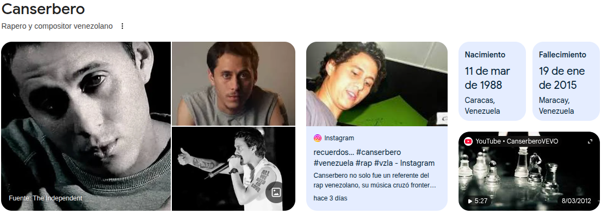
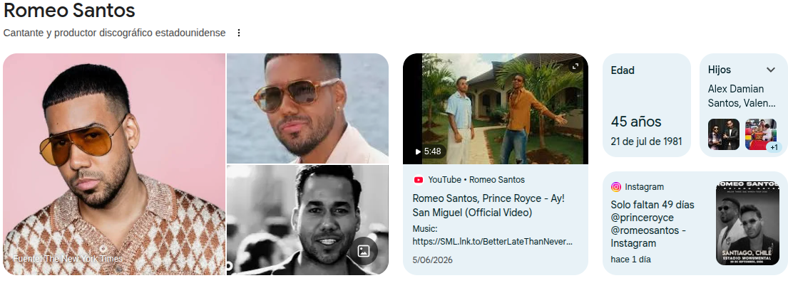

Mi Música Favorita
La música es una parte muy importante de mi vida. Me acompaña en muchos momentos, me ayuda a expresar mis emociones y siempre logra alegrar mis días. Estos son algunos de mis artistas favoritos.
Morat

Morat es una de mis bandas favoritas. Me gusta porque sus canciones hablan del amor, la amistad y las experiencias de la vida con letras muy bonitas. Su estilo musical me transmite tranquilidad y alegría, por eso disfruto escuchar sus canciones en cualquier momento.
Canserbero

Canserbero fue un artista que se destacó por sus letras profundas y llenas de reflexión. Me gusta porque muchas de sus canciones hablan sobre la vida, los sentimientos y las experiencias personales, dejando enseñanzas y mensajes que invitan a pensar.
Romeo Santos

Romeo Santos es uno de mis cantantes favoritos de bachata. Me encanta su voz, el sentimiento que transmite en cada canción y las historias de amor que cuentan sus letras. Su música siempre logra hacerme disfrutar cada momento.
Volver a la página principal